| 작물 지지대 | 덩굴성 식물의 성장을 돕는 기둥 ■ 씨앗을 심은 흙에 설치하면 효과가 있다 |
목재 3 실 1 |
텅 빈 섬 작업대 | |
| 허수아비 | 밭의 성장을 지켜보는 인형 ■ 주변의 건강한 흙을 주민들이 경작해 밭으로 만든다 ※ 미미즌이 주변 바닥을 흙으로 바꾼다 / 바위 종류는 불가능 |
목재 1 실 1 마른 풀 5 |
텅 빈 섬 작업대 | |
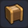 |
플랜터 | 흙이 들어 있는 나무 용기 ■ 작은 작물을 키울 수 있다 ※ 빌더 하트 50 교환 (잠금 해제) |
목재 3 흙 1 |
텅 빈 섬 작업대 |
| 먹이 그릇 | 동물의 먹이를 담는 작은 그릇 ※ 텅 빈 섬에 동물 대려오기 2 ■ 색 변경 가능 |
목재 1 | 텅 빈 섬 작업대 | |
| 동물 잠자리 | 짚 위에 천을 씌운 동물용 잠자리 ※ 텅 빈 섬에 동물 대려오기 2 |
밀 2 | 텅 빈 섬 작업대 | |
| 건초 더미 | 건조시켜 쌓아 놓은 밀짚 | 밀 3 | 텅 빈 섬 작업대 | |
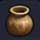 |
항아리 | 부드러운 흙을 반죽해서 만든 항아리 | 진흙 1 기름 1 |
텅 빈 섬 작업대 |
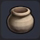 |
돌 항아리 | 돌로 만들어진 항아리 | 석재 2 | 텅 빈 섬 작업대 |
| 화장실 | 나무로 만들어진 화장실 ■ 색 변경 가능 |
목재 3 | 텅 빈 섬 작업대 | |
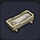 |
욕조 | 더운물을 받아 몸을 담글 수 있는 목욕탕 ■ 목욕할 수 있다 |
석재 4 석탄 2 |
텅 빈 섬 작업대 |
| 1인용 목욕탕 | 더운물을 받아 몸을 담글 수 있는 나무 목욕탕 ■ 목욕할 수 있다 |
목재 14 석재 4 실 2 |
텅 빈 섬 작업대 | |
| 샤워기 | 사람이 가까이 다가가면 물을 뿜는 장치 ■ 목욕할 수 있다 |
은괴 5 | 텅 빈 섬 작업대 | |
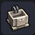 |
싱크 | 물을 담아 음식 등을 씻는 가구 ※ 빌더 하트 20 교환 (잠금 해제) |
석재 4 | 텅 빈 섬 작업대 |
| 드레서 | 거울을 얹은 화장대 ■ 주인공의 외모를 변경할 수 있다 / 색 변경 가능 |
목재 3 유리 5 동괴 1 |
텅 빈 섬 작업대 | |
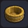 |
대야 | 나무를 조립해서 만든 물을 넣는 도구 | 목재 2 실 1 |
텅 빈 섬 작업대 |
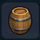 |
통 | 판 형태의 목재를 조립해서 만든 통 | 목재 2 실 1 |
텅 빈 섬 작업대 |
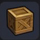 |
나무 상자 | 판 형태의 목재를 조립해서 만든 상자 | 목재 2 | 텅 빈 섬 작업대 |
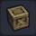 |
허름한 나무 상자 | 방치되어 여기저기 부서진 나무 상자 | 나무 상자 1 | 그루터기 작업대 |
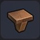 |
선반 DIY 키트 | 선반을 만들 때 쓰는 옆판 ■ 두 개을 놓으면 사이에 선반이 생긴다 / 색 변경 가능 |
목재 5 | 텅 빈 섬 작업대 |
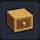 |
선반 서랍 | 옷장용 서랍 ■ 아이템을 수납할 수 있다 |
목재 3 철괴 1 |
텅 빈 섬 작업대 |
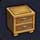 |
캐비닛 | 작은 것을 수납할 수 있는 서랍 ■ 아이템을 수납할 수 있다 / 색 변경 가능 ※ 빌더 하트 20 교환 (잠금 해제) |
목재 4 | 텅 빈 섬 작업대 |
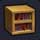 |
책장 | 나무판 프레임에 책을 꽃아넣은 선반 ■ 색 변경 가능 ※ 빌더 하트 20 교환 (잠금 해제) |
책 3 목재 1 |
텅 빈 섬 작업대 |
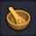 |
나무 식기 | 나무로 만들어진 포근한 느낌의 식기 ■ 요리를 담을 수 있다 / 색 변경 가능 |
목재 2 | 텅 빈 섬 작업대 |
| 식기 | 흙을 구워서 만든 컵이나 접시 ■ 요리를 담을 수 있다 |
흙 2 | 텅 빈 섬 작업대 | |
| 유리병 | 유리로 만들어진 액체를 담는 용기 | 유리 2 | 텅 빈 섬 작업대 | |
| 고급 유리병 | 3개가 세트로 되어 있는 유리병 ※ 유리병을 모으자 (잠금 해제) |
유리 2 동괴 1 |
텅 빈 섬 작업대 | |
| 구리 잔 | 주스가 담긴 커다란 구리 컵 ■ 요리를 담을 수 있다 |
동괴 1 루비라 1 |
텅 빈 섬 작업대 | |
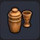 |
셰이커 | 음료를 섞는 구리로 된 작은 용기 | 동괴 1 | 텅 빈 섬 작업대 |
| 은 물병 | 음료를 따를 수 있는 손잡이 달린 용기 | 은괴 2 | 텅 빈 섬 작업대 | |
| 언제나 여름 드링크 | 선인장 과일을 잘라 만든 주스 장식 ■ 요리를 담을 수 있다 |
차킬라 1 글라디올러스 씨앗 1 담쟁이덩굴 열매 1 |
텅 빈 섬 작업대 | |
| 커피 세트 | 커피 잔과 주전자 세트 ■ 요리를 담을 수 있다 / 색 변경 가능 ※ 빌더 하트 20 교환 (잠금 해제) |
블랙 커피 1 | 텅 빈 섬 작업대 | |
| 버섯 모둠 바구니 | 바구니에 담긴 버섯 ■ 요리를 담을 수 있다 |
버섯 1 씁쓸버섯 1 하늘색 느타리 1 목재 1 |
텅 빈 섬 작업대 | |
| 샐러드 플레이트 | 야채가 듬뿍 담긴 샐러드 플레이트 ■ 요리를 담을 수 있다 |
양배추 1 토마토 1 나무 식기 1 |
텅 빈 섬 작업대 | |
| 수프와 샐러드 | 전채 요리를 담은 플레이트 ■ 요리를 담을 수 있다 ※ 빌더 하트 20 교환 (잠금 해제) |
알록달록 샐러드 1 펌프킨 수프 1 식기 1 |
텅 빈 섬 작업대 | |
| 빵와 바구니 | 고소한 냄새가 나는 바구니에 든 갓 구운 빵 ■ 요리를 담을 수 있다 |
빵 2 목재 1 |
텅 빈 섬 작업대 | |
| 사골 냄비 | 쌀쌀해지면 생각나는 솥에 푹 끓인 뜨끈뜨끈한 요리 ■ 요리를 담을 수 있다 |
포토푀 1 철괴 1 솜 1 |
텅 빈 섬 작업대 | |
| 튀김 플레이트 | 도자기 그릇에 담긴 튀김 요리 ■ 요리를 담을 수 있다 ※ 빌더 하트 20 교환 (잠금 해제) |
생선 튀김 1 식기 2 |
텅 빈 섬 작업대 | |
| 생선 플레이트 | 해산물이 듬뿍 담긴 플레이트 ■ 요리를 담을 수 있다 ※ 빌더 하트 20 교환 (잠금 해제) |
생선구이 1 식기 1 |
텅 빈 섬 작업대 | |
| 고기 플레이트 | 촉촉한 고기 플레이트 ■ 요리를 담을 수 있다 |
스테이크 1 식기 1 |
텅 빈 섬 작업대 | |
| 오메가 스테이크 세트 | 빅 스테이크에 가니시를 곁들인 세트 ■ 요리를 담을 수 있다 ※ 드래곤 고기를 모으자 (잠금 해제) |
빅 스테이크 1 고추냉이 1 옥수수 1 나무 식기 1 철괴 1 |
텅 빈 섬 작업대 | |
| 마물 정식 마운틴 사이즈 | 마물들이 맛있게 먹는 대접 요리 ■ 요리를 담을 수 있다 |
메가 마물 정식 1 파괴의 모래 7 |
텅 빈 섬 작업대 | |
| 팥 샌드위치 장식 | 다 같이 먹을 수 있게 가득 담아 놓은 팥 샌드위치 ■ 요리를 담을 수 있다 |
팥 샌드위치 1 식기 1 |
텅 빈 섬 작업대 | |
| 과일 파르페 | 과일을 잔뜩 올린 달콤한 파르테 ■ 요리를 담을 수 있다 ※ 빌더 하트 20 교환 (잠금 해제) |
딸기 1
멜론 1 아이스크림 1 유리 1 |
텅 빈 섬 작업대 | |
| 케이크 세트 | 케이크와 홍차 세트 ■ 요리를 담을 수 있다 |
케이크 1 식기 1 |
텅 빈 섬 작업대 | |
| 바나나 바구니 | 맨드릴이 좋아하는 바나나가 든 바구니 ■ 요리를 담을 수 있다 ※ 빌더 하트 20 교환 (잠금 해제) |
바나나 1 목재 1 |
텅 빈 섬 작업대 | |
| 일본식 떡국 | 경단과 여러 식재료를 끓인 요리 ■ 요리를 담을 수 있다 ■ 무료 DLC (새해 팩) |
밀 3 닭고기 1 나무 식기 1 |
텅 빈 섬 작업대 | |
| 간판 | 나무로 만들어진 팻말 ■ 원하는 문장을 쓸 수 있다 ※ 빌더 하트 10 교환 (잠금 해제) |
목재 2 | 텅 빈 섬 작업대 | |
| 전시 간판 | 거대한 물건을 전시할 때 쓰는 간판 ■ 원하는 문장을 쓸 수 있다 /색 변경 가능 ※ 빌더 하트 20 교환 (잠금 해제) |
철괴 1 목재 1 |
텅 빈 섬 작업대 | |
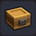 |
수납 상자 | 안에 물건이 들어 있기도 한 목재품 상자 | 목재 3 | 텅 빈 섬 작업대 |
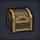 |
수납함 | 물건을 자유롭게 넣고 뺄 수 있는 상자 ■ 아이템을 수납할 수 있다 |
목재 3 | 텅 빈 섬 작업대 |
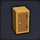 |
선반 장롱 | 옷장용의 세로로 긴 장롱 ■ 아이템을 수납할 수 있다 |
목재 2 | 텅 빈 섬 작업대 |
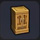 |
장롱 | 의류를 걸어줄 수 있는 가구 ■ 아이템을 수납할 수 있다 ※ 빌더 하트 20 교환 (잠금 해제) |
목재 5 | 텅 빈 섬 작업대 |
| 수납 로커 | 조금 신비로운 금속제 수납 해치 ■ 아이템을 수납할 수 있다 |
시도늄 2 | 텅 빈 섬 작업대 | |
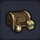 |
잡동사니 창고 | 물건을 자유롭게 넣고 뺄 수 있는 창고 ■ 아이템을 수납할 수 있다 |
목재 8 모피 3 항아리 1 |
텅 빈 섬 작업대 |
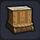 |
큰 옷장 | 의류를 수납하는 돌로 만든 가구 ■ 아이템을 수납할 수 있다 ※ 빌더 하트 100 교환 (잠금 해제) |
목재 5 석재 2 동괴 1 실 2 |
텅 빈 섬 작업대 |
| 가격표 | 물건의 가격을 표시하는 표 ■ 아이템을 팔 수 있다 |
목재 1 석재 1 |
텅 빈 섬 작업대 | |
| 전시대 | 도구를 놓을 수 있도록 가공된 받침대 ■ 도구를 전시할 수 있다 ※ 빌더 하트 50 교환 (잠금 해제) |
목재 2 모피 1 |
텅 빈 섬 작업대 | |
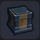 |
장비 전시대 | 장비를 놓을 수 있도록 가공된 받침대 ■ 장비를 전시할 수 있다 ※ 빌더 하트 50 교환 (잠금 해제) |
목재 2 철괴 1 |
텅 빈 섬 작업대 |
| 사진 액자 | 사진을 장식하기 위한 틀 ■ 모두의 사진을 볼 수 있다 / 색 변경 가능 ※ 빌더 하트 100 교환 (잠금 해제) |
목재 5 | 텅 빈 섬 작업대 | |
| 주민 명단 | 섬 주민이 등록되어 있는 명부 ■ 주민들의 거주지 등을 관리할 수 있다 |
목재 2 풀 실 4 |
텅 빈 섬 작업대 | |
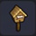 |
우체통 | 편지를 받을 수 있는 우체통 ■ 편지를 받을 수 있다 |
목재 3 | 텅 빈 섬 작업대 |
| 게시판 | 모두의 사진과 지형을 볼 수 있는 게시판 ■ 좋아요! 를 누루거나 랭킹을 확인할 수 있다 |
목재 5 | 텅 빈 섬 작업대 | |
| 벨 | 울리면 맑은 소리가 나는 종 ■ 울리면 주민들이 모아놓은 빌더 하트를 회수할 수 있다 |
금괴 3 | 텅 빈 섬 작업대 | |
| 빌더 벨 | 빌더의 힘이 깃든 사람들의 마음을 움직이는 종 | 빌더의 영혼 1 목재 3 석재 3 |
사교의 작업대 | |
| 해머 실 | 해머로 부술 곳을 표시한 것 ■ 붙인 곳을 거대 나무망치(마물)가 부숴준다 |
풀 실 1 실 1 |
텅 빈 섬 작업대 | |
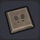 |
가이드 플레이트 | 가이드 대사를 등록할 수 있는 플레이트 ■ 멀티 플레이어 시 등록한 주민이 대사를 말한다 ※ 빌더 하트 300 교환 (잠금 해제) |
석재 3 | 텅 빈 섬 작업대 |
| 무희용 무대 | 무희가 춤출 때 쓰이는 발판 ■ 춤을 춘다 |
목재 2 | 텅 빈 섬 작업대 | |
| 튜브 | 물에 둥실둥실 뜨는 튜브 ■ 물위에 놓을 수 있다 / 색 변경 가능 |
풀 실 3 야광초 3 |
텅 빈 섬 작업대 | |
| 프라이팬 | 철로 만든 조리 기구 ■ 모닥불 위에 올리면 2칸 조리대로 변화 |
철괴 2 목재 1 |
텅 빈 섬 작업대 | |
| 허름한 메모 | 오랜되어 너덜너덜해진 메모 | 메모 1 | 그루터기 작업대 | |
| 메모 | 떠오른 것 등을 적어 둔 종이 뭉치 ※ 빌더 하트 10 교환 (잠금 해제) |
풀 실 1 | 텅 빈 섬 작업대 | |
| 낡은 책 | 하고 많이 읽어 너덜너덜해진 책 | 책 1 | 그루터기 작업대 | |
| 책 | 도움이 되는 정보나 이야기가 기록된 새로운 서책 ■ 색 변경 가능 ※ 빌더 하트 10 교환 (잠금 해제) |
풀 실 3 | 텅 빈 섬 작업대 | |
| 문방구 | 펜이나 노트 등 무언가를 적을 때 쓰이는 도구 ※ 빌더 하트 20 교환 (잠금 해제) |
유리 1 풀 실 3 |
텅 빈 섬 작업대 | |
| 야한 책 | 쬐끔 므흣한 내용이 쓰여 있는 책 ※ 텅 빈 섬에 책 50개 설치 (잠금 해제) |
감옥섬 | 텅 빈 섬 작업대 | |
| 포커 | 숫자와 그림이 그려진 카드 | 풀 실 2 | 텅 빈 섬 작업대 | |
| 주사위 놀이 장식 | 주사위를 던져 칸을 진행하는 놀이 ※ 빌더 하트 20 교환 (잠금 해제) |
풀 실 4 목재 1 벚꽃 잎 1 |
텅 빈 섬 작업대 | |
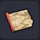 |
지도 | 주변 지형 등이 그려진 것 | 풀 실 4 | 텅 빈 섬 작업대 |
| 인간 모양 말 | 인간 모양 나무 인형 ■ 색 변경 가능 |
목재 1 | 텅 빈 섬 작업대 | |
| 슬라임 모양 말 | 슬라임 모양 나무 인형 ※ 빌더 하트 10 교환 (잠금 해제) |
목재 1 | 텅 빈 섬 작업대 | |
| 약연 | 약을 곱게 갈 때 쓰이는 도구 ※ 빌더 하트 50 교환 (잠금 해제) |
석재 1 흙 1 약잎 1 목재 1 |
텅 빈 섬 작업대 | |
| 고급 키트 | 응급 처치에 사용하는 붕대와 소독약 세트 | 유리 1 약잎 1 풀 실 2 |
텅 빈 섬 작업대 | |
| 덤벨 | 몸을 단련할 때 쓰이는 철제 봉 | 철괴 1 실 1 |
텅 빈 섬 작업대 | |
| 향로 | 말린 식물 등에 불을 붙여 향을 즐기는 화로 | 철괴 1 금괴 1 목재 1 |
텅 빈 섬 작업대 | |
| 수정구 | 수정 구슬 안을 들여다보면 미래가 보일지도? | 마력의 수정 2 | 텅 빈 섬 작업대 | |
| 수면의 꽃잎 | 온천 등 따뜻한 물 위에 떠 있는 꽃잎 ■ 색 변경 가능 ※ 빌더 하트 20 교환 (잠금 해제) |
벚꽃 잎 1 | 그루터기 작업대 | |
| 생화 | 여러 송이의 꽃을 모아 꽂은 것 ■ 색 변경 가능 |
분홍 꽃 씨앗 1 흙 1 |
텅 빈 섬 작업대 | |
| 화분 | 식물을 꽂아 둘 때 쓰이는 커다란 항아리 ■ 색 변경 가능 |
흙 3 | 텅 빈 섬 작업대 | |
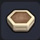 |
육각 플랜터 | 돌을 깎아 만든 거대한 용기 ※ 빌더 하트 50 교환 (잠금 해제) |
석재 6 흙 2 |
텅 빈 섬 작업대 |
| 로프 | 물건을 묶거나 연결할 수 있는 두껍고 튼튼한 끈 | 실 3 | 텅 빈 섬 작업대 |